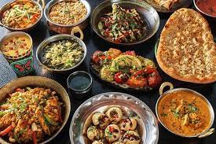
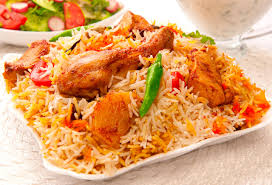
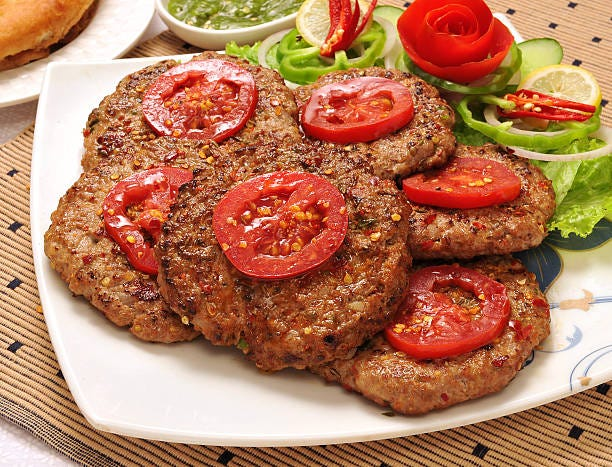
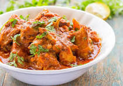

PAKISTAN
Traditional dishes

discover the gourmet cuisine of Packistan
Pakistan is famous for its delicious and flavorful cuisine. If you are a food lover or simply want to discover new flavors, immerse yourself in the fascinating world of Pakistani gastronomy. Pakistani cuisine is a fusion of diverse influences, ranging from Indian culinary traditions to Persian, Afghan and Arabic influences. It is distinguished by the generous use of spices and aromatic herbs which give the dishes an explosion of flavors.
One of Pakistan's iconic dishes is biryani, a spicy rice dish with chicken, mutton or vegetables. Prepared with care and attention to detail, each bite will transport you to a unique symphony of taste.
Pakistani kebab is also very popular in the country. Whether it's a seekh kebab (minced meat skewer), a shami kebab (meat-based pancake) or a chapli kebab (spicy flat pancake), these grilled preparations are a real treat for the taste buds.
For curry lovers, don't miss the famous Pakistani tikka masala. This dish consists of tender pieces of meat marinated in a creamy sauce made with spices such as cumin, coriander and red pepper. Accompanied by naans (traditional breads), tikka masala is a staple of Pakistani cuisine.
In the end, let's not forget the delicious Pakistani desserts. From gulab jamun (fried dough balls soaked in sweet syrup) to kulfi (ice cream made with milk and spices), to sheer khurma (sweet vermicelli made with milk), each sweet bite will transport you to a taste paradise.
Pakistani gastronomy is a real invitation to a culinary journey. Whether you are looking for a gastronomic adventure or simply curious to discover new exquisite flavors, let yourself be seduced by the delicate and tasty dishes of Pakistan